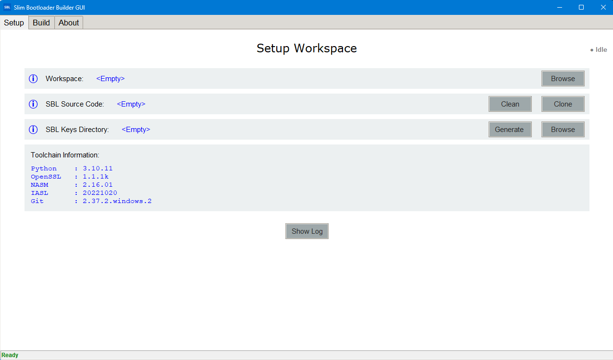
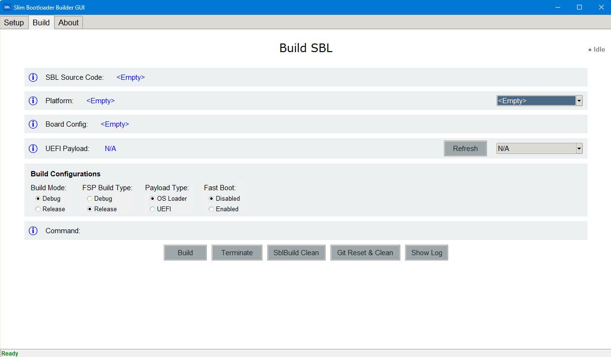

SblBuilderGui Tool
Introduction
SblBuilderGui is a graphical front end for the Slim Bootloader build flow.
It provides a convenient way to select a target board, choose build options,
preview the generated build command, and launch the same BuildLoader.py
workflow used by the command-line build tool.
Usage
The SblBuilderGui tool is designed to simplify common build tasks:
Point the GUI to a Slim Bootloader source tree.
Select a supported platform and board configuration.
Choose the build mode, FSP build type, and payload type.
Select a UEFI payload binary when the payload type requires one.
Review the generated command in the command preview field.
Click
Buildto run the build, orCleanto remove build artifacts.
The GUI refreshes available boards and payload files from the source tree so the options stay aligned with the current repository contents.
Working
SblBuilderGui is a thin orchestration layer over the standard Slim Bootloader
build pipeline. After the user selects the desired options, the tool
constructs the corresponding BuildLoader.py command and runs it in the
selected repository directory.
The high-level flow is:
Configure inputs from the GUI controls.
Preview the command that will be executed.
Run the build in the SBL source directory.
Produce build artifacts under the
Outputsdirectory.
The underlying build flow follows the same stages described by the Build Tool documentation, including environment initialization, pre-build processing, the EDK II build step, and post-build packaging and stitching.
Screenshot

